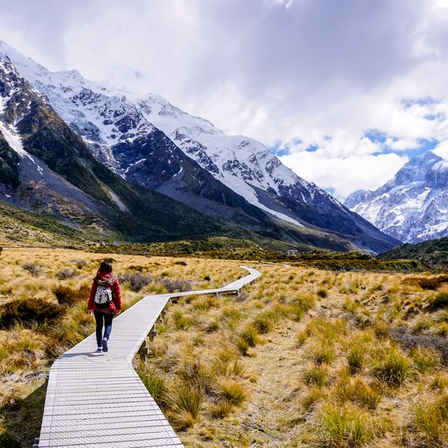

Come Travel New Zealand

About New Zealand
A small island nation home to around 4.5 million people located in the Pacific Ocean, New Zealand is famous for its national rugby team, its indigenous Maori culture and its picturesque landscape. If you're an international student considering studying abroad, New Zealand may be a long way from home.New Zealand is made up of two major land masses (North Island and South Island) and a number of smaller islands including Stewart Island located in the southwestern Pacific Ocean. The two main islands are divided by a 22km stretch of water called the Cook Strait.
New Zealand is located approximately 1,500km east of Australia and about 1,000km from the Pacific Islands. Due to its relative remoteness and being water locked, New Zealand was one of the last countries to be found and settled. The country is made up of some of the worlds most spectacular landscapes, from vast mountain ranges, steaming volcanoes to sweeping coastlines. It is a natural playground for thrill seekers and adventurers and those who simply want to visit for the culture and landscapes.